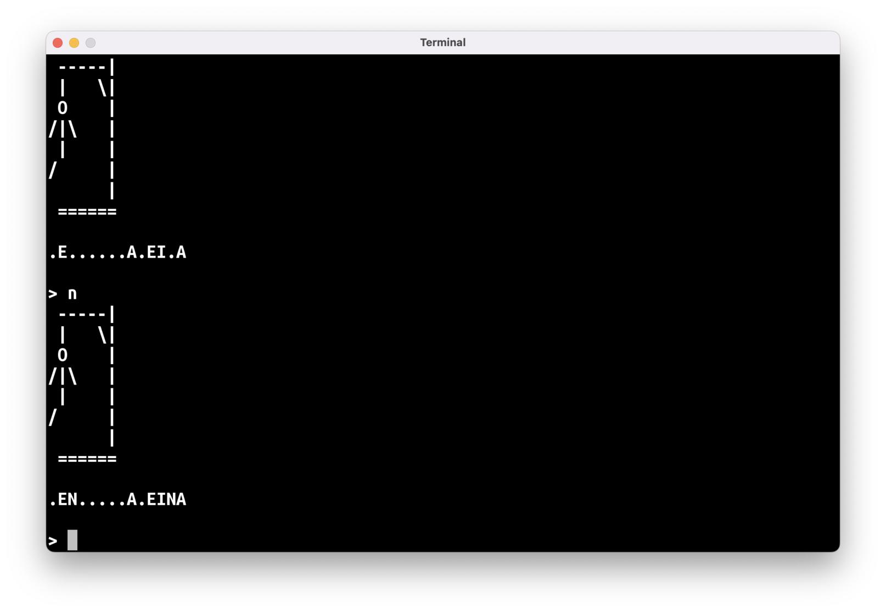
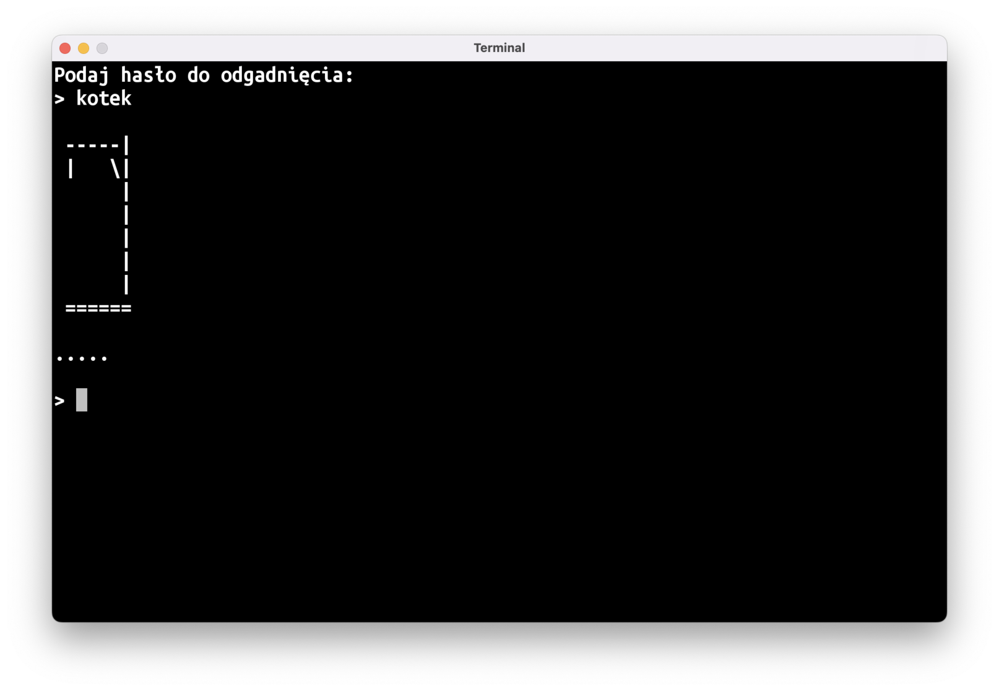
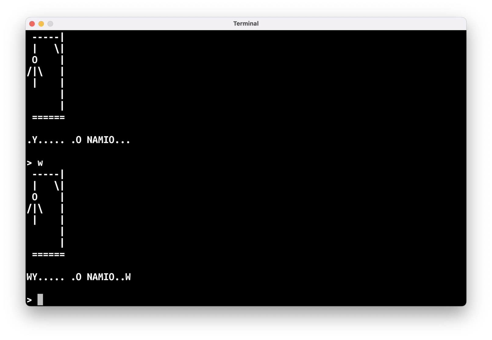

“Wisielec”
Inną grą, którą możemy napisać dzięki listom, jest “Wisielec”.
Celem gry jest odgadnięcie hasła składającego się z jednego wyrazu. Początkowo wszystkie litery hasła są zakryte, tj. zastąpione kropeczkami (czyli od samego początku wiadomo, ile hasło ma liter). Gracz zgaduje po jednej literce: jeśli podana literka jest w haśle, wszystkie jej wystąpienia w haśle zostają odsłonięte; jeśli jej nie ma, gracz traci jedno życie.
Liczba pozostałych żyć przedstawiona jest w dość makabryczny sposób: na ekranie wyświetlona jest szubienica, do której stopniowo dorysowywane są kolejne elementy ludzika – tytułowego wisielca. Gracz wygrywa, jeśli uda mu się odgadnąć hasło, zanim na ekranie pojawi się cała postać wisielca.

Tak jak w przypadku “Kółka i Krzyżyk”, przejdziemy kolejno przez pięć kroków:
- Stan gry: jakie dane składają się na pełny stan gry
- Pseudokod: jak wyglądać będzie główna pętla gry
- Puste funkcje: pomocnicze funkcje, którymi zastąpimy fragmenty pseudokodu
- Integracja: sprawdzenie, czy pomocnicze funkcje pasują do siebie i czy niczego nie brakuje
- Wypełnianie dziur: implementacja pomocniczych funkcji
Stan gry/model danych
W przypadku “Wisielca” stan gry składa się z następujących danych:
- Ilość popełnionych dotychczas błędów (lub na odwrót – liczba pozostałych “żyć”)
- Odgadywane hasło
- Postępy odgadywania
Ilość błędów lub pozostałych żyć to po prostu liczba, a zatem zmienna typu Int.
Odgadywane hasło oraz postępy odgadywania możemy przechowywać na liście znaków. W drugim przypadku będziemy tę listę zmieniać, powinna więc to być wartość typu MutableList<Char>. Hasło może być typu List<Char>.
Sugestia, aby przechowywać postępy odgadywania hasła jako String o takiej długości jak hasło nie jest dobrym pomysłem: w Kotlinie teksty są stałe (niemutowalne), i nie można zmieniać ich wartości. Da się ten problem obejść, ale byłoby to po prostu dużo mniej poręczne i czytelne niż zastosowanie listy.
Do zamiany tekstu na listę znaków możecie użyć funkcji fun String.toList(): List<Char>.
Tak więc nasz model danych przedstawia się następująco:
var błędy: Int = 0
val hasło: List<Char> = "cośtam".toList()
val odkryteLitery: MutableList<Char> = mutableListOf()
Początkowo wszystkie litery są zakryte, a więc dodajmy do odkryteLitery tyle znaków '.', ile jest liter w haśle:
for (litera in hasło) {
odkryteLitery.add('.')
}
Dygresja nr 1: czy nasz model danych musi wyglądać w ten sposób?
Absolutnie nie musi! W programowaniu każdy problem można rozwiązać na kilkanaście sposobów.
Nasz model danych można zorganizować zupełnie inaczej, co będzie miało duży wpływ na dalszą implementację: niektóre funkcje pomocnicze mogą stać się prostsze do napisania, niektóre trudniejsze.
Spróbujcie wykombinować inny sposób na przechowywanie stanu gry!
Pseudokod
Główna pętla gry wygląda następująco:
// narysuj szubienicę
// wypisz odkryte litery
// wczytaj literę
// jeśli wczytana litera jest w haśle
// odkryj wszystkie wystąpienia tej litery
// w przeciwnym razie
// zwiększ licznik błędów o jeden
I jak każda porządna pętla gry, jest powtarzana, póki gra nie zostanie zakończona:
// powtarzaj
// narysuj szubienicę
// wypisz odkryte litery
// wczytaj literę
// jeśli wczytana litera jest w haśle
// odkryj wszystkie wystąpienia tej litery
// w przeciwnym razie
// zwiększ licznik błędów o jeden
// tak długo, jak gra nie została zakończona
Na koniec wypada też wypisać wynik:
// powtarzaj
// narysuj szubienicę
// wypisz odkryte litery
// wczytaj literę
// jeśli wczytana litera jest w haśle
// odkryj wszystkie wystąpienia tej litery
// w przeciwnym razie
// zwiększ licznik błędów o jeden
// tak długo, jak gra nie została zakończona
// wypisz wynik
Puste funkcje
Do narysowania szubienicy potrzebna jest tylko informacja o liczbie popełnionych błędów, tak więc nasza pierwsza funkcja pomocnicza będzie wyglądać następująco:
fun narysujSzubienicę(błędy: Int) {
}
Wypisywanie odkrytych liter też chyba nie wymaga dłuższego komentarza:
fun wypiszOdkryteLitery(odkryteLitery: List<Char>) {
}
Chcemy wczytywać z klawiatury pojedynczą literę, co sugeruje zwracanie obiektu typu Char. Musimy jednak pamiętać o tym, że użytkownicy mogą wpisać jakieś bzdury. Użyjmy zatem opcjonalnego typu Char?:
fun wczytajLiterę(): Char? {
return null // zwracamy cokolwiek, żeby IntelliJ nie marudził
}
Do sprawdzenia, czy wczytana litera jest częścią hasła, możemy użyć bibliotecznej funkcji List<T>.contains(T): Boolean.
Najtrudniejszym zadaniem będzie odkrywanie odgadniętej litery. Proponuję opakować to w funkcję:
fun odkryjLiterę(
litera: Char,
hasło: List<Char>,
odkryteLitery: MutableList<Char>,
) {
}
Nasza funkcja będzie zmieniała przekazaną do niej listę odkryteLitery w taki sposób, aby odkryć wszystkie wystąpienia litery litera na liście hasło.
Ostatnim elementem pseudokodu, który wymaga napisania osobnej funkcji, jest sprawdzenie, czy gra została zakończona w warunku głównej pętli. Proponuję stworzyć funkcję wynik:
fun wynik(błędy: Int, odkryteLitery: List<Char>): Boolean? {
return null
}
Ponieważ grę w “Wisielca” można albo przegrać, albo wygrać, możemy tę informację przekazać typem Boolean. Wartość true będzie oznaczać wygraną, a wartość false – przegraną. Zwrócenie null oznacza, że gra wciąż trwa.
Parametr błędy potrzebny będzie, aby stwierdzić, czy gra zakończyła się przegraną: gracz przegrywa, jeśli popełni więcej niż dozwoloną ilość błędów.
odkryteLitery wykorzystamy, aby sprawdzić, czy gra toczy się dalej: wystarczy poszukać, czy w dalszym ciągu mamy tam znak '.', którym zastąpiliśmy litery hasła (wymaga to przyjęcia radosnego założenia, że hasło samo w sobie nie ma znaku '.'; pomyślcie, jak trzebaby zmienić program, aby takie hasła były wspierane).
Dygresja nr 2: po co nam te wszystkie funkcje?
Inaczej mówiąc, czy nie dałoby się tego napisać wszystkiego w main?
Oczywiście, że by się dało, ale ładowanie wszystkiego do jednej funkcji nie jest najlepszą praktyką. W przypadku tak krótkiego programu jak “Wisielec” czy “Kółko i Krzyżyk” nie będzie to miało większego znaczenia, ale przy dłuższych programach rozbijanie kodu na mniejsze funkcje jest bardzo pomocne.
Dzięki tym pomocniczym funkcjom kod naszej funkcji main będzie przypominał pseudokod, czyli będzie łatwiej się zorientować, co się tam po kolei dzieje.
Integracja
Pseudokod i puste funkcje pomocnicze wyglądają następująco:
fun main() = terminal {
// ---------- KROK 1: STAN GRY -----------
var błędy: Int = 0
val hasło: List<Char> = "cośtam".toList()
val odkryteLitery: MutableList<Char> = mutableListOf()
// ---------- KROK 2: PSEUDOKOD ----------
// powtarzaj
// narysuj szubienicę
// wypisz odkryte litery
// wczytaj literę
// jeśli wczytana litera jest w haśle
// odkryj wszystkie wystąpienia tej litery
// w przeciwnym razie
// zwiększ licznik błędów o jeden
// tak długo, jak gra nie została zakończona
// wypisz wynik
}
// ---------- KROK 3: PUSTE FUNKCJE ----------
fun narysujSzubienicę(błędy: Int) {
}
fun wypiszOdkryteLitery(odkryteLitery: List<Char>) {
}
fun wczytajLiterę(): Char? {
return null
}
fun odkryjLiterę(
litera: Char,
hasło: List<Char>,
odkryteLitery: MutableList<Char>,
) {
}
fun wynik(błędy: Int, odkryteLitery: List<Char>): Boolean? {
return null
}
Kilka linii pseudokodu można zastąpić wywołaniem jednej z pomocniczych funkcji:
do {
narysujSzubienicę(błędy)
wypiszOdkryteLitery(odkryteLitery)
val litera = wczytajLiterę()
if (…) { // jeśli wczytana litera jest w haśle
odkryjLiterę(litera, hasło, odkryteLitery)
} else {
błędy = błędy + 1
}
} while (…) // gra trwa dalej
// wypisz wynik
Warunek gra trwa dalej można inaczej zapisać jako wynik gry nie jest jeszcze znany, czyli inaczej wynik(…) == null.
Warunek wczytana litera jest w haśle to inaczej hasło zawiera wczytaną literę, co w zasadzie 1:1 tłumaczy się na wywołanie bibliotecznej funkcji: hasło.contains(litera).
Do wypisania wyniku nie stworzyliśmy osobnej funkcji. Możemy użyć prostego wyrażenia when.
Finalnie daje nam to:
do {
narysujSzubienicę(błędy)
wypiszOdkryteLitery(odkryteLitery)
val litera = wczytajLiterę()
if (hasło.contains(litera)) {
odkryjLiterę(litera, hasło, odkryteLitery)
} else {
błędy = błędy + 1
}
} while (wynik(błędy, odkryteLitery) == null)
when (wynik(błędy, odkryteLitery)!!) {
true -> {
// pogratuluj graczowi wygranej
}
false -> {
// wyświetl komunikat o przegranej
}
}
Treść komunikatów o wygranej/przegranej pozostawiam waszej inwencji twórczej.
Operator !!
Zwróćcie uwagę na linię:
when (wynik(błędy, odkryteLitery)!!) {
// …
}
Dwa wykrzykniki (!!) służą do wymuszenia na Kotlinie zmiany opcjonalnego obiektu (w tym przypadku Boolean? zwróconego z funkcji wynik) na jego nie-opcjonalny odpowiednik. Dzięki temu musimy obsłużyć w naszym wyrażeniu when tylko dwa przypadki – dla true i false – możemy natomiast pominąć obsługę sytuacji dla wynik(…) zwracającego null:
when (wynik(błędy, odkryteLitery)!!) {
true -> {
// pogratuluj graczowi
}
false -> {
// wyświetl komunikat o przegranej
}
// nie ma potrzeby dodawania jeszcze:
// null -> { … }
}
Jako twórcy programu mamy 100% pewność, że w tym momencie wartość zwrócona z funkcji wynik() nie może być równa null – gdyby taka była, nasza główna pętla gry działałaby nadal. Kotlin nie jest w stanie sam tego stwierdzić, więc musimy mu pomóc.
Nadużywanie operatora !! nie jest dobrą praktyką. Wręcz przeciwnie – za każdym razem, gdy musicie go użyć, powinniście też zastanowić się, czy nie da się jakoś przerobić powiązanego kodu tak, aby użycie !! nie było konieczne.
Wypełnianie dziur
Ostatni krok to dodanie kodu w pustych “wydmuszkach” funkcji pomocniczych. W tym wpisie zamieszczę tylko pseudokod dla każdej funkcji, a waszym zadaniem do domu będzie zamiana tego pseudokodu na Kotlinową implementację.
narysujSzubienicę
fun narysujSzubienicę(błędy: Int) {
// jeśli ilość popełnionych błędów jest równa
// 0 -> narysuj tylko szubienicę
// 1 -> narysuj szubienicę oraz główkę
// 2 -> narysuj szubienicę oraz główkę i brzuszek
}
Do rysowania możemy użyć serii println‘ów albo pojedynczego println z tekstem wielolinijkowym.
Uwaga: możecie mieć problem z narysowaniem prawej rączki ludzika. Znak \ wewnątrz zwykłego tekstu traktowany jest w specyficzny sposób – łączy się on z następnym znakiem:
// \n przechodzi do następnej linijki
println("Hello\nWorld") // wypisanie tekstu w dwóch liniach jednym println
// \" to po prostu cudzysłów
// dzięki temu możemy stworzyć tekst zawierający znak "
println("\"Hello\"") // wypisze "Hello"
Żeby wypisać znak \ musimy wewnątrz tekstu użyć "\\":
println("O, znalazłem prawą rękę wisielca: \\")
wypiszOdkryteLitery
fun wypiszOdkryteLitery(odkryteLitery: List<Char>) {
// dla każdej litery na liście odkryteLitery
// wypisz literę na ekran nie przechodząc do następnej linii
// a na koniec funkcji przejdź do następnej linii
}
wczytajLiterę
fun wczytajLiterę(): Char? {
// wczytaj tekst z klawiatury
// jeśli wczytany tekst jest jednoliterowy
// zwróć pierwszą (i jedyną) literę tego tekstu
// w przeciwnym razie
// zwróć null
}
odkryjLiterę
Przy naszym modelu danych ta funkcja będzie dość trudna do napisania. Musimy jednocześnie patrzeć na dwie listy, hasło i odkryteLitery, tak więc nie możemy użyć zwykłej pętli for (litera in hasło).
Wykorzystamy fakt, że te dwie listy powinny mieć tę samą liczbę elementów i będziemy “jechać” pętlą nie po elementach listy, ale po jej indeksach:
for (i in hasło.indices) {
// wyciąganie i-tej litery z listy hasło
val literaHasła = hasło[i]
// zmiana i-tego elementu listy odkryteLitery
odkryteLitery[i] = …
}
Tak więc pseudokod tej funkcji będzie wyglądał następująco:
fun odkryjLiterę(
litera: Char,
hasło: List<Char>,
odkryteLitery: MutableList<Char>,
) {
// dla wszystkich indeksów na liście odkryte litery
// jeśli i-ty element hasła jest taki sam jak wpisana litera
// ustaw i-ty element listy odkryteLitery na wpisaną literę
}
wynik
fun wynik(błędy: Int, odkryteLitery: List<Char>): Boolean? {
// jeśli gracz popełnił więcej błędów niż dopuszczalna ilość, zwróć false
// w przeciwnym razie, jeśli w dalszym ciągu jest jakaś nieodkryta litera, zwróć null
// w przeciwnym razie gra musiała się zakończyć wygraną więc zwróć true
}
Zadania do domu
😵 Dokończenie “Wisielca”
Funkcja main jest prawie gotowa, musicie tylko dodać komunikaty o wygranej i przegranej oraz zaprogramować wszystkie pomocnicze funkcje.
🔑 Podawanie hasła do “Wisielca”
Na razie hasło jest na sztywno wpisane w kod programu. Zamiast tego, możecie na starcie programu poprosić użytkownika o wpisanie hasła. Dzięki temu można będzie grać w naszego “Wisielca” z rodzeństwem albo kolegą: jedna osoba będzie wpisywać hasło, a druga będzie je odgadywać.
Problemem jest to, że wpisane hasło będzie widoczne na ekranie na starcie gry:

Nie mamy jeszcze gotowej funkcji do czyszczenia ekranu, ale możemy ten problem obejść. Jeśli wypiszemy masę pustych linii, zawartość ekranu “przewinie się” i zniknie za górną krawędzią okna:
// po wczytaniu hasła, ale przed wejściem do głównej pętli gry
for (i in 1..50) {
println()
}
🫥 Wielowyrazowe hasła w “Wisielcu” ⭐️
Dodajcie do “Wisielca” obsługę wielowyrazowych haseł. Spacje powinny być widoczne już od samego początku, żeby było wiadomo, ile liter ma każdy z wyrazów.
